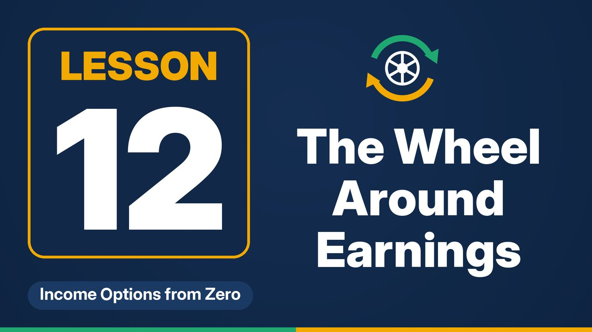

What an Option Is
In plain English: what a call is, what a put is, and what strike, expiration, and premium mean.
The basics, one idea at a time.
Written explainers on cash-secured puts, covered calls and earnings timing are on the way. Until then, start with the video series below.
A video series that starts at the beginning. Episode 1 covers what an option is. Later episodes build on it in order.
In plain English: what a call is, what a put is, and what strike, expiration, and premium mean.
Every option has a buyer and a seller. In plain English: long and short, exercise and assignment, why sellers collect the premium up front, and the risk they take on in return. We flip the Episode 1 examples to the seller's side, look at break-even points, and see why covered calls and cash-secured puts back the seller's promise with shares or cash.
A plain-English tour of a simulated option chain for a made-up stock: how the screen is laid out, what the bid and ask mean, how to figure the spread and the mid, why wide spreads are a hidden cost, and what volume and open interest tell you (and what they don't).
Every option premium is intrinsic value plus time value. We break down the difference with a made-up stock, watch time value leak away as expiration gets closer, and meet theta, the estimated daily decay. You'll see why decay speeds up in the final weeks, why that tends to help option sellers and hurt buyers, and why it doesn't protect a seller from a big move, assignment, or losses.
A call is the right to buy, a put is the right to sell, and every option has a buyer and a seller. In this lesson we line up all four seats, then walk a call and a put through expiration with made-up numbers: what each is worth, where each buyer breaks even (strike plus premium for a call, strike minus premium for a put), and what the seller on the other side gains or loses. We finish with in, at, and out of the money, and where income strategies fit.
Delta estimates how much an option's price changes when the stock moves $1, with everything else held still. Using a made-up stock and a simulated chain, we work through a call with a delta of 0.50 and a put with a delta of minus 0.20, read deltas across strikes, and look at three ways to think about delta: as a price estimate, as a share count, and as a rough rule of thumb for the chance an option finishes in the money. Then we flip to the seller's side and see why delta is only a starting estimate that changes as the stock moves and as expiration gets close.
Implied volatility (IV) is the size of the moves the market is pricing into an option. It's about how big, not which way. With a made-up stock and simple rules of thumb, we compare the same put at 20% and 40% IV, meet vega, turn a yearly IV into a rough expected move, and walk through a volatility crush after an earnings report, where the stock doesn't move but the put loses about two-thirds of its price. Then we look at the other side: why high IV isn't free money for a seller when the stock does make a big move.
Selling a stock short and selling a put both start with "sell," but they're close to opposite trades. A short seller borrows shares, sells them, and wants the stock to fall, with no limit on the possible loss. A put seller promises to buy shares at the strike in exchange for a premium, and wants the stock to stay above that strike. With made-up numbers, we walk both through the same moves, compare the most each can make and lose, look at the put seller's break-even and worst case, and see how the two look on an order ticket.
Cash-secured puts. You sell a put, collect the premium up front, and set aside enough cash to buy 100 shares at the strike. We walk through one example trade on a made-up stock: the cash it ties up, the return on that cash, the break-even, and three endings at expiration. Then we look honestly at the risks: a big drop, an earnings gap, early assignment, and the rally you can miss.
Choosing a strike and an expiration for a cash-secured put. We line up four example strikes on a made-up stock and compare the premium, the cash it ties up, the return, the break-even, and how far the stock can fall before you lose money. Then we compare short and long expirations, see why an earnings report inside the window raises the premium and the risk, and finish with a simple routine.

Covered calls. You own 100 shares, sell one call against them, and collect a premium, a bit like renting out a house where the tenant can buy it at a set price. We walk through one example trade on a made-up stock, three endings at expiration, how the call strike changes what you keep, and what it costs to buy a call back early. We're honest about the risks: capped upside, the full downside of the shares, earnings gaps, and early assignment.

The final lesson: the wheel around earnings. The wheel joins the last three lessons into a loop: sell a cash-secured put, own the shares if you're assigned, sell covered calls, and repeat. We walk through one smooth example turn, then add the earnings report: why premiums swell before it and shrink after, how an expected move compares with your room to fall, what a gap does to a put seller, how the wheel can get stuck, and how a covered call caps a gap up.